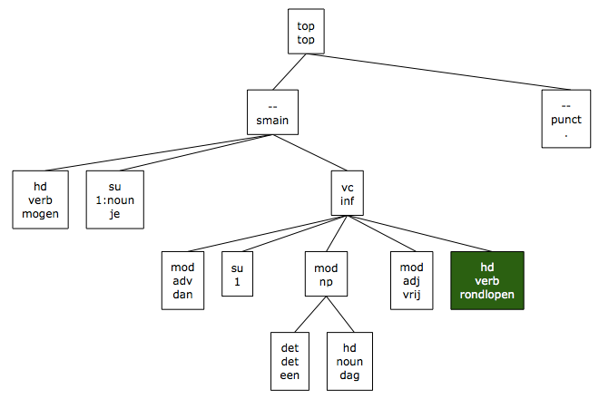
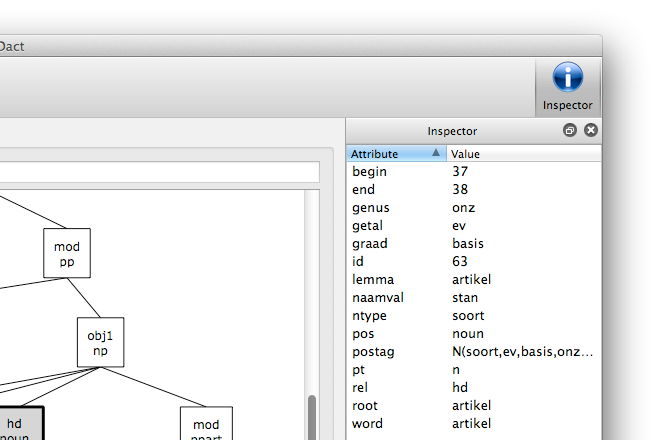
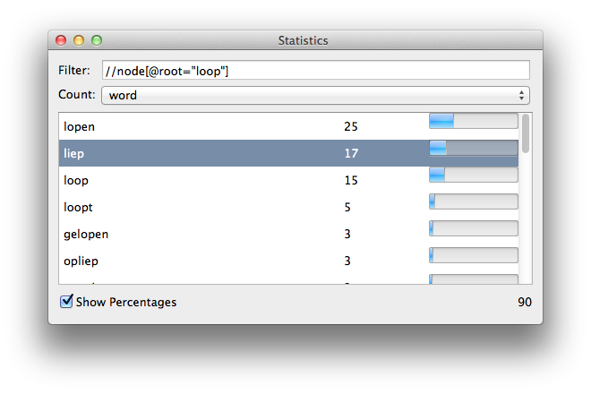

Features
- An intuitive interface
-
 Parsed sentences are drawn as trees
Parsed sentences are drawn as trees
- Inspectable tree nodes
-
 Quickly gather statistics
Quickly gather statistics
- Get insight in your corpus
-
 Download directly from inside the app
Download directly from inside the app
-
Easy to use interface
Dact features an easy to use interface that works like any other desktop application.
-

Tree
Parsed sentences are shown as trees, and nodes that match you XPath query are highlighted. You can print a tree or save it as PDF. And you can click a node to inspect it in the Inspector.
-

Node inspector
Inspect tree nodes to see their attributes. These are the attributes you can use to refine you XPath queries. Any attribute encoded in the corpus is shown.
-

Statistics
Because Dact uses DBXML to store corpora, queries can be run quickly. The results of these queries can be copy–and–pasted into almost any program or spreadsheet.
-

Sentences
Gain insight in your corpus by looking at the matched words in their context, or hide the context completely.
-

Download new corpora
Download and unpack corpora directly from within the app. You can bring your own compact corpus as well, or even a folder with xml files.